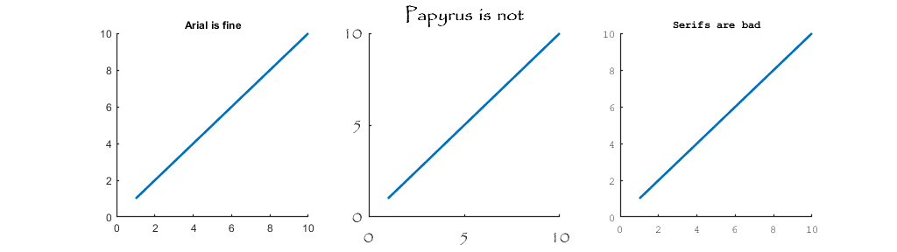
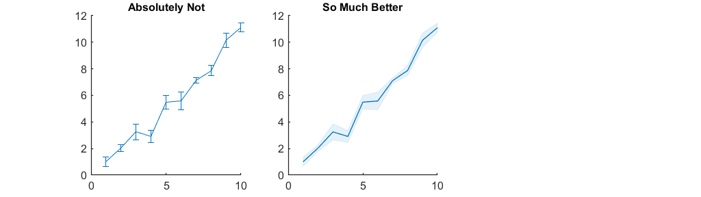
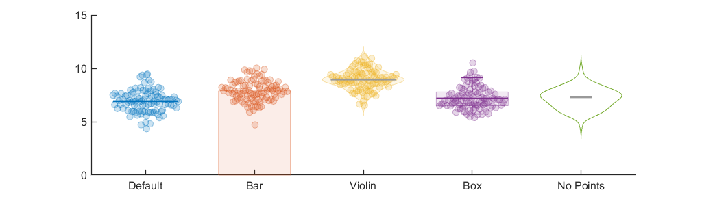

Contents
Example scripts for plotting functions
1. SetFont
This function allows for globally setting all typefaces and fontsizes in one call. Note that the SetFont must be run at the beginning of the script (or in this case before the axes are created)
figure; SetFont('Arial', 9) subplot(1,3,1); hold on plot([1:10], [1:10], 'LineWidth', 2) title('Arial is fine') SetFont('Papyrus', 15) subplot(1,3,2); hold on plot([1:10], [1:10], 'LineWidth', 2) title('Papyrus is not') SetFont('Monospaced', 9) subplot(1,3,3); hold on plot([1:10], [1:10], 'LineWidth', 2) title('Serifs are bad') set(gcf, 'Units', 'Normalized', 'Position', [.3 .4 .4 .2], 'Name', 'Plotting Example')
2. GetUnicodeChar
Many figures require Greek letters to be used as notation (eg. mu, sigma) This function allows for them to be easily made and in some cases will be supported by the typeface used
fprintf('The string "mu" produces %s, while "Mu" produces %s\n', GetUnicodeChar('mu'), GetUnicodeChar('Mu'))
The string "mu" produces μ, while "Mu" produces Μ
3. AlphaLine
Quite simply the standard stalks for error bars are ugly, don't use them.
SetFont('Arial', 12) clf; x = [1:10]; y = repmat([1:10], [5,1]) + randn([5,10]); y_mean = mean(y,1); err = std(y,1,1) / sqrt(5); subplot(1,3,1); hold on errorbar(x,y_mean,err) title('Absolutely Not') subplot(1,3,2); hold on AlphaLine(x,y,lines(1)) title('So Much Better')
4. SymphonicBeeSwarm
A nicer method of showing value distribution of categories when not using a histogram or CDF
SetFont('Arial', 12) clf; colors = lines(5); % The default look. Takes the x value, a vector of y values, the color, and the point size x = 1; y = randn([100,1]) + randi([5,10]); SymphonicBeeSwarm(x, y, colors(1,:), 50) % The function also allows for a variety of background plots y = randn([100,1]) + randi([5,10]); SymphonicBeeSwarm(2, y, colors(2,:), 50, 'BackgroundType', 'Bar', 'CenterColor', 'none') y = randn([100,1]) + randi([5,10]); SymphonicBeeSwarm(3, y, colors(3,:), 50, 'BackgroundType', 'Violin', 'CenterColor', [.6 .6 .6]) y = rand([100,1])*3 + randi([5,10]); SymphonicBeeSwarm(4, y, colors(4,:), 50, 'BackgroundType', 'Box', 'CenterColor', 'none', 'CenterWidth', .1) % and many many other options y = randn([100,1]) + randi([5,10]); SymphonicBeeSwarm(5, y, colors(5,:), 50, 'CenterMethod', 'median', 'CenterColor', [.6 .6 .6], 'CenterWidth', .1,... 'DistributionMethod', 'histogram', 'BackgroundType', 'violin', 'BackroundFaceAlpha', 0, 'BackroundEdgeAlpha', 1,... 'MarkerFaceAlpha', 0, 'MarkerEdgeAlpha', 1, 'BoxPercentiles', [1,40,60,99], 'MaxPoints', 0) xticks([1:5]); xticklabels({'Default', 'Bar', 'Violin', 'Box', 'No Points'})